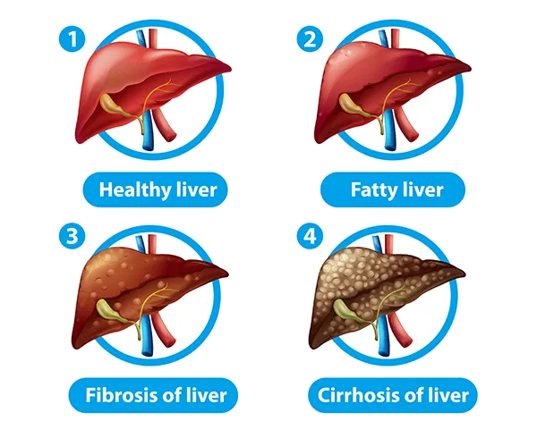

Liver Diseases - Ayurvedic Treatment
LOTUS Holistic Healthcare Clinic, specializes in the treatment of
liver problems such as fatty liver and cirrhosis. Our approach
emphasizes a healthy lifestyle, balanced diet and stress reduction
through yoga and meditation to maintain body balance.
We analyze the medical history and symptoms through comprehensive
consultations, we prepare individual liver plans according to
individual needs.
Our Ayurvedic Liver Treatment uses non-toxic herbs to reduce
oxidative stress and liver inflammation while promoting holistic
healing and overall well-being. Our primary goal is to treat the
root causes of liver disease, not just the symptoms.
Contact us today to learn more and schedule an appointment with our
expert liver doctors for effective treatment of fatty liver disease
and Ayurvedic medicines for liver health..
Common Symptoms Of Liver Disease
1. Fatigue and weakness
2. Itching
3. Dark urine
4. Spider angiomas
5. Pain in the upper right side of the abdomen
6. Nausea and loss of appetite
7. Swelling in the legs and ankles
8. Yellowing of the skin and eyes (Jaundice)
Types & Treatment Of Liver Disease:
1. Fatty Liver Treatment
Fatty liver disease is caused by excessive accumulation of fat in
the liver, leading to inflammation and possible damage or scarring.
This liver disease can be divided into two main categories:
alcoholic fatty liver disease, which is related to excessive alcohol
consumption, and nonalcoholic fatty liver disease, which is caused
by factors other than alcohol abuse...
2. Liver Cirrhosis Treatment
Cirrhosis is a chronic liver disease characterized by the
replacement of healthy liver tissue with scar tissue, which over
time damages the health and function of the liver. This liver
disease impairs the ability of the liver to perform its normal
functions. In addition, the scar tissue that accumulates in
cirrhosis also prevents proper blood circulation through the
liver...
3. Chronic liver failure Treatment
Chronic liver failure is often caused by severe damage to the liver
and its function. The development of liver failure directly
correlates with cirrhosis, a condition characterized by progressive
liver disease. In this disease, the general health of the liver
deteriorates, which impairs liver function and can lead to long-term
consequences...
4. Liver Fibrosis Treatment
Liver fibrosis is a buildup of scar tissue in the liver caused by
ongoing inflammation and damage. If ignored, it can damage the
health and function of the liver and lead to serious consequences
such as cirrhosis. This disease is classified as a liver problem and
is one of the liver diseases, including liver inflammation and liver
failure in the worst cases...
5. Hepatitis Treatment
Viral hepatitis is a disease caused by the virus responsible for the
infection. Hepatitis-related liver problems can weaken and damage
the health of the liver, making it difficult for the liver to
perform its normal functions. This condition is described as liver
disease, specifically a liver infection caused by a virus...